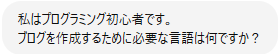
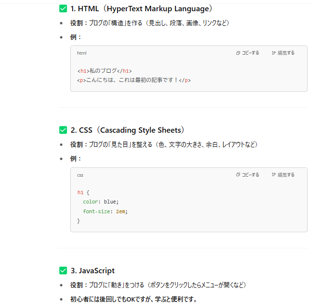
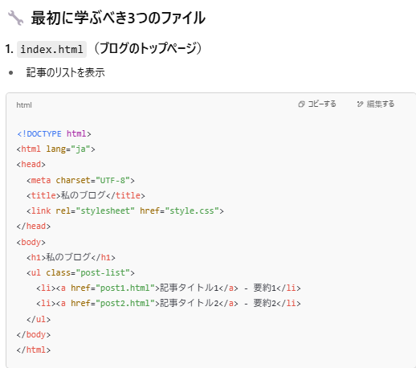
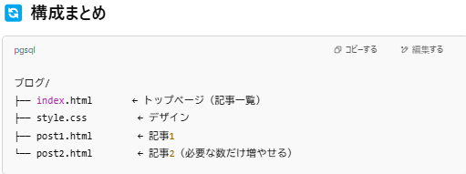
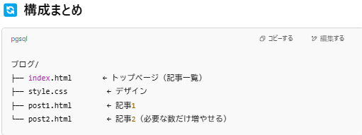
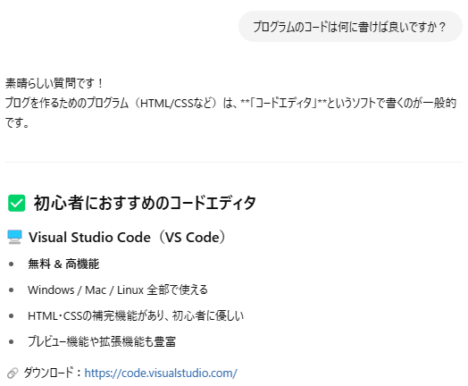
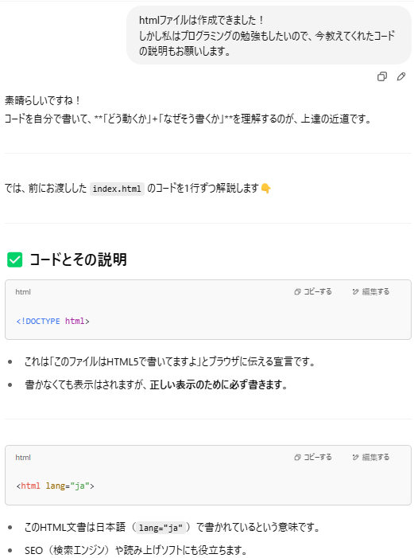

カテゴリ:ブログ作成～公開まで～
投稿日：2025年5月6日
「プログラミングってまず何から始めたらいいの？」
そんな疑問を抱えながら、ChatGPTの力を借りてブログ制作に挑戦するシリーズの第1回です。
今回は、何の言語を学ぶべきか、どんなファイルを作ればいいのか、そしてコードを書くためにどんなツールを使えばいいのかを教えてもらいました。
HTML・CSSといった基本に加え、無料のエディタVisual Studio Codeの使い方まで、初心者に優しいスタートをChatGPTが導いてくれます。
早速どの言語を学ぶべきか聞いてみます！
すると次のような回答が。
なるほど。言語の一覧と役割、例を出してくれました！
さらにおすすめの始め方として簡単にまとめてくれました。
まずはHTMLとCSSを学べば良さそうですね！
さらに無料のコードエディタまで教えてくれました！
そしてChatGPTは対話感覚で回答してくれるので次の提案もしてくれています。
ここでは適当に記事リスト型で回答。
すると最初に学ぶべき3つのファイルとそのコード内容も教えてくれます。
 

なるほどねー！ブログのトップページであるindex.html、見た目を整えるstyle.css、記事の本文ページのpost001.htmlを作ればいいのか！
ほんで構成はこんなかんじかー！なるほどねー！
・・・
・・・・・・
あの・・・すいません・・・コードって何に書けばいいんですか？
テキストドキュメントでいいのかな？なんかエディタがあるって聞いたことあるけど・・・
（コードエディタは既に教えてもらっているのに突発的な記憶喪失）
そんなときもChatGPTなら優しく教えてくれます。
優しすぎる。こんな事人間に聞こうものなら、「さっき言わなかった？」「聞いてなかったの？」
などと言われてもおかしくありません。
さらにエディタのざっくりした特徴、ダウンロードリンクを短くまとめてくれています。
インストール方法やファイルの作成手順まで教えてくれます。
VS Codeではフォルダごと開いて編集するのが基本のようなので、教えてくれた通りデスクトップにmy-blogフォルダを作り、その中に3つのファイルを作成します。
あとは作成したファイルに、教えてもらったコードをコピーするだけ。
ふー。らくしょーーー。
あれ・・・ブログを作るためにChatGPT使ってたんだっけ・・・？
違う違う！プログラミングを勉強するためにブログを作成しようと思ってChatGPTを使ってたんだ！
また記憶喪失。。。ここでようやくChatGPTに本題を伝えます。遅い。
するとコードを1行ずつ解説してくれます。偉すぎる。皆さんはまず最初に本題から伝えましょう。
これでようやく当初の目的である学びながらブログを作成するという段階に辿り着いたので今回はここまで。
次回は実際にVSCの画面でhtmlファイルを作成します。
カテゴリ:ブログ作成～公開まで～